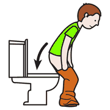
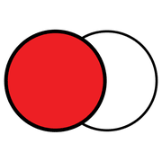

Secondo incontro, modulo 5
Prima del PECS
Tre strategie alla portata di ogni insegnante che preparano il terreno alla comunicazione, senza bisogno di competenze cliniche.
con misura!
Il posizionamento «scomodo»

sedersi
davanti guardare
guardareUn oggetto desiderato è visibile ma non raggiungibile da solo: su uno scaffale alto, in un contenitore chiuso. Così nasce il bisogno di rivolgersi all'adulto.
Va dosato bene: l'oggetto deve piacere davvero e la frustrazione non deve mai essere eccessiva. Si può anticipare con una domanda, «lo vuoi?», mentre lo si mostra.
La scelta tra due
Si offrono sempre due opzioni visibili. Il bambino esprime una preferenza e l'adulto scopre che cosa lo motiva davvero: un'informazione preziosa anche per un futuro percorso PECS.
 palla
palla libro
libroQualsiasi segnale vale: uno sguardo, un gesto, un suono. Non serve aspettare la parola.
La logica comune
 dare
dare prendere
prendere chiedere
chiedereMeglio provarle una alla volta con un bambino, osservando l'effetto, che applicarle subito a tutta la sezione.